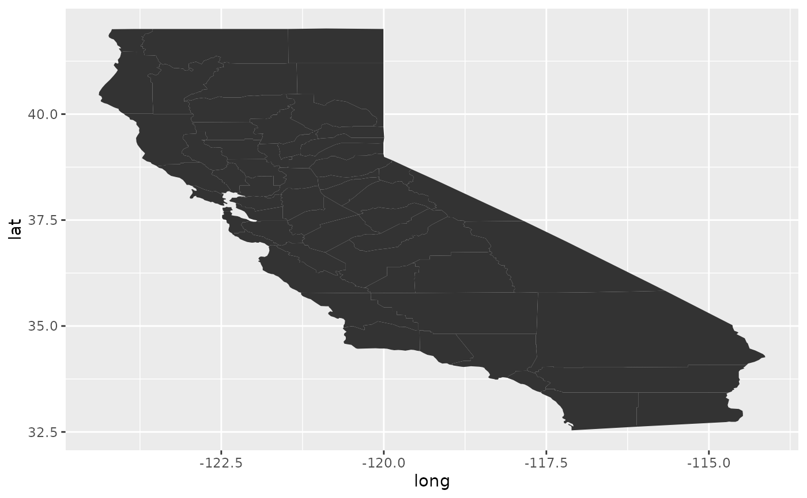
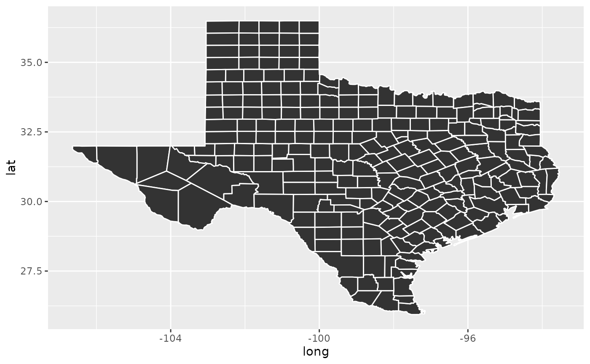

Tidy summarizes information about the components of a model. A model component might be a single term in a regression, a single hypothesis, a cluster, or a class. Exactly what tidy considers to be a model component varies cross models but is usually self-evident. If a model has several distinct types of components, you will need to specify which components to return.
# S3 method for map tidy(x, ...)
| x | A |
|---|---|
| ... | Additional arguments. Not used. Needed to match generic
signature only. Cautionary note: Misspelled arguments will be
absorbed in |
library(maps)#> #>#> #> #>#> #> #>#> # A tibble: 2,977 x 7 #> term long lat group order region subregion #> <chr> <dbl> <dbl> <dbl> <int> <chr> <chr> #> 1 1 -121. 37.5 1 1 california alameda #> 2 2 -122. 37.5 1 2 california alameda #> 3 3 -122. 37.5 1 3 california alameda #> 4 4 -122. 37.5 1 4 california alameda #> 5 5 -122. 37.5 1 5 california alameda #> 6 6 -122. 37.5 1 6 california alameda #> 7 7 -122. 37.5 1 7 california alameda #> 8 8 -122. 37.5 1 8 california alameda #> 9 9 -122. 37.5 1 9 california alameda #> 10 10 -122. 37.5 1 10 california alameda #> # … with 2,967 more rows#> # A tibble: 4,488 x 7 #> term long lat group order region subregion #> <chr> <dbl> <dbl> <dbl> <int> <chr> <chr> #> 1 1 -95.8 31.5 1 1 texas anderson #> 2 2 -95.8 31.6 1 2 texas anderson #> 3 3 -95.8 31.6 1 3 texas anderson #> 4 4 -95.7 31.6 1 4 texas anderson #> 5 5 -95.7 31.6 1 5 texas anderson #> 6 6 -95.7 31.6 1 6 texas anderson #> 7 7 -95.8 31.7 1 7 texas anderson #> 8 8 -95.8 31.7 1 8 texas anderson #> 9 9 -95.8 31.6 1 9 texas anderson #> 10 10 -95.8 31.6 1 10 texas anderson #> # … with 4,478 more rows